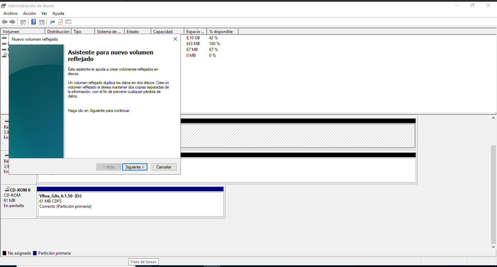
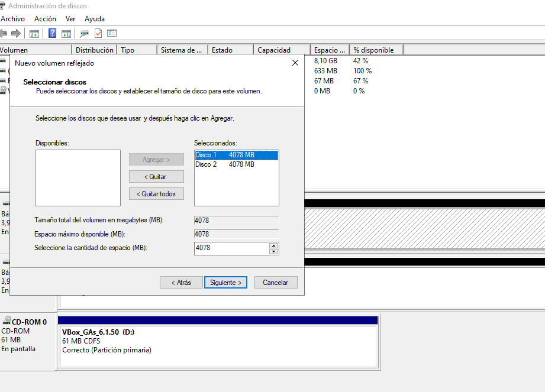
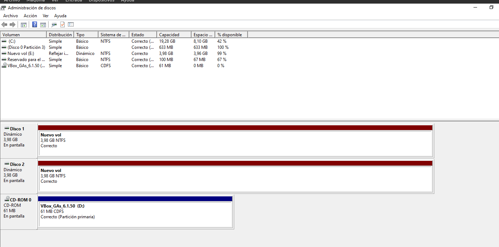
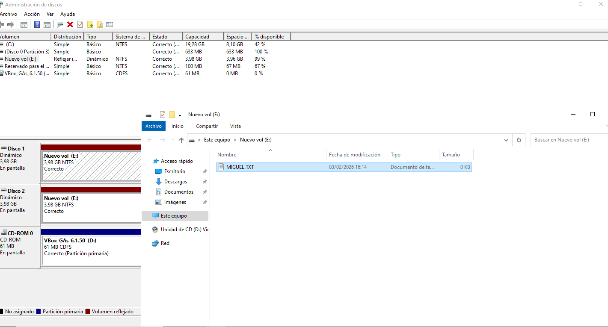
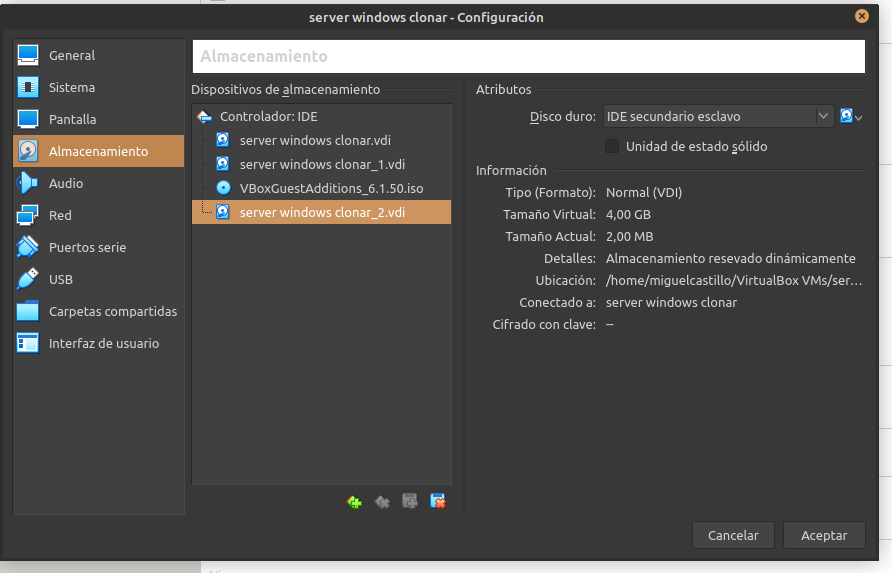
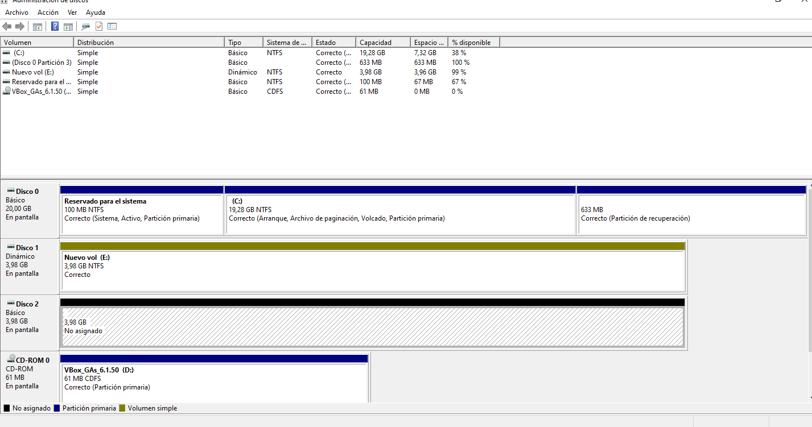

Ejercicio 1 – Creación de un volumen reflejado
En esta práctica se ha configurado un volumen reflejado (RAID 1) en Windows Server, con el objetivo de proporcionar tolerancia a fallos mediante la duplicación de los datos en dos discos distintos.
Paso 1: Discos disponibles en el sistema
Se comprueba en el Administrador de discos que existen dos discos disponibles y sin datos, preparados para crear el volumen reflejado.

Captura: Discos disponibles en el Administrador de discos.
Paso 2: Creación del volumen reflejado
Se inicia el asistente de nuevo volumen reflejado y se seleccionan ambos discos para formar el RAID 1.
Captura: Selección de los discos para el volumen reflejado.
Paso 3: Confirmación de conversión a discos dinámicos
Windows Server muestra una advertencia indicando que los discos básicos se convertirán en discos dinámicos para poder crear el volumen reflejado.
Captura: Advertencia de conversión a discos dinámicos.
Paso 4: Formato del volumen reflejado
Se formatea el volumen reflejado en NTFS y se asigna una letra de unidad para su uso.
Captura: Formato y asignación de letra al volumen reflejado.
Paso 5: Sincronización del espejo
Una vez creado el volumen, el sistema comienza la sincronización de los datos entre ambos discos que forman el RAID 1.
Captura: Proceso de sincronización del volumen reflejado.
Paso 6: Volumen reflejado operativo
Finalizado el proceso, el volumen reflejado aparece como correcto y operativo en el Administrador de discos.
Captura: Volumen reflejado funcionando correctamente.
Paso 7: Comprobación de tolerancia a fallos
Se simula el fallo de uno de los discos y se comprueba que el sistema sigue permitiendo el acceso a los datos, demostrando la tolerancia a fallos del RAID 1.
Captura: Acceso a los datos con uno de los discos fallando.
Ejercicio 2 – Uso del volumen reflejado en una empresa
Un volumen reflejado es especialmente útil en servidores de archivos empresariales, ya que garantiza la disponibilidad de los datos incluso cuando uno de los discos falla.
También se utiliza en sistemas críticos como servidores de contabilidad o bases de datos internas, donde la pérdida de información o el tiempo de inactividad puede tener un alto impacto.
Además, el RAID 1 mejora el uptime del sistema, permitiendo sustituir discos defectuosos sin necesidad de detener el servicio.
Ejercicio 3 – RAID y copias de seguridad
Un sistema RAID no sustituye a una copia de seguridad, ya que cualquier borrado accidental, corrupción de datos o ataque de malware se replica automáticamente en todos los discos.
Sin embargo, el RAID 1 mejora la disponibilidad del sistema al permitir que este siga funcionando ante el fallo de un disco, aumentando así el tiempo de actividad del servicio.